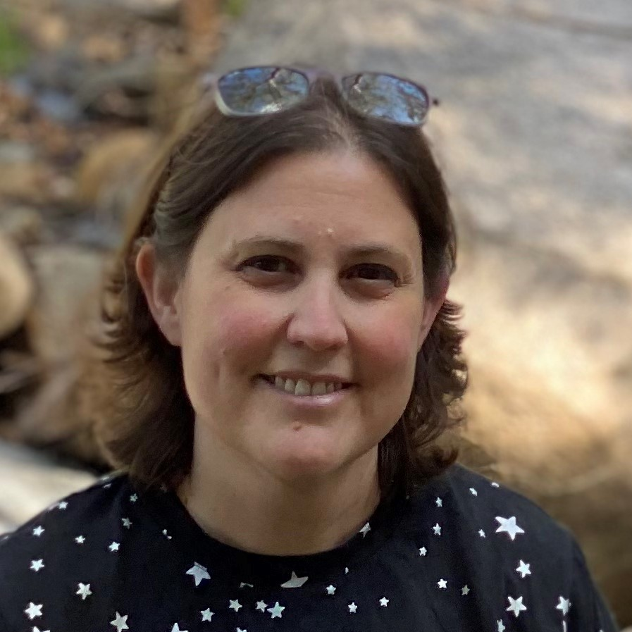

LibreTexts is made possible thanks to the dedication and effort of all the
Development Team
and Advisory Board Members.
It is thanks to this community that LibreTexts has had such astronomical growth
in just a few years,
and their efforts are propelling LibreTexts toward becoming an all-inclusive hub
for student
learning.

Delmar Larsen
LibreTexts Director
Josh Halpern
Outreach Team Chair

Eric Boosman
Creative Director

Henry Agnew
Full-Stack Developer

Robert Belford
Developer

Brent Krueger
Developer
Mojdeh Mehdizadeh
Developer
Marco Molinaro
Assessment and Evaluation Team Leader

Jennifer Rogers
Communication and Outreach Liaison

Ron Rusay
Developer

Justin Shorb
Lead Developer
Outreach
Outreach
Christine Barrow
Curator - Career and Technical Library
Kathryn Haas
Curator
Inorganic Chemistry
Inorganic Chemistry

Henry Jakubowski
Curator
Biological Chemistry
Biological Chemistry
Paul Seeburger
Curator
Mathematics
Mathematics
Delmar Larsen
Associate Professor
Department of Chemistry
University of California, Davis
Delmar Larsen
LibreTexts Director
Delmar Larsen
LibreTexts Director
Delmar Larsen
LibreTexts Director
Delmar Larsen
LibreTexts Director
Delmar Larsen
LibreTexts Director
Delmar Larsen
LibreTexts Director
Delmar Larsen
LibreTexts Director
Delmar Larsen
LibreTexts Director
Delmar Larsen
LibreTexts Director
Delmar Larsen
LibreTexts Director
Delmar Larsen
LibreTexts Director
Peter Brantley
Advisory Board member
Mary Burgess
Advisory Board member
Aaron Fulkerson
Advisory Board member

Gerry Hanley
Advisory Board member
Leslie Kennedy
Advisory Board member
Mark McBride
Advisory Board member
John Moore
Advisory Board member

Dave Yaron
Advisory Board member
Steel Wagstaff
Advisory Board member